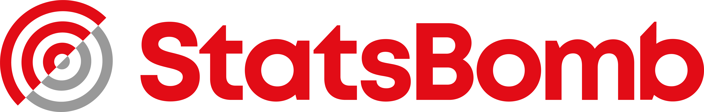

Three attempts at the same dream
This work compares Argentina’s 2014, 2018 and 2022 World Cups through the records that can be made genuinely comparable: match progression, score state, goals, substitutions, line-ups and shared starts.
It is designed as an exploratory essay. It does not score a team’s “quality”, infer intent from a formation, or treat one match as a complete account of a tournament.
Possible extensions
A licensed 2014 event source could add a harmonised pitch layer. The 2022 StatsBomb 360 files could support a separate study of visible passing options around selected events. Neither is silently mixed into this edition.
Common backbone
All three editions use the same source and definitions for fixtures, results, goal times, substitutions and player appearances. “Retained” is the count of starters also present in the immediately preceding starting XI. “Near Messi” means matches in which both players started.
Score state
The match clocks exclude penalty-shootout kicks. A line above zero means Argentina led; below zero means Argentina trailed. Stoppage-time events are placed at regulation minute plus the recorded added minute.
Event enhancement
StatsBomb events are counted only for Argentina and grouped into five-minute bins. Pass completion follows StatsBomb’s convention: a pass without an outcome field is counted as complete. xG is displayed only inside this 2018/2022 layer and is never imputed for 2014.
Fjelstul World Cup Database
The common backbone is a modified extract of the Fjelstul World Cup Database: © 2023 Joshua C. Fjelstul, Ph.D., licensed under CC BY-SA 4.0. Source repository.
Modifications: filtered to Argentina at the 2014, 2018 and 2022 men’s World Cups; normalized to Argentina’s perspective; derived score-state segments, retained-starter counts and co-start counts.
StatsBomb Open Data
The optional 2018 and 2022 event layer uses StatsBomb Open Data. Event summaries retain the provider’s terminology. 2022 source matches include StatsBomb 360 availability, but freeze frames are not used here.

Known boundary
No StatsBomb 2014 World Cup season exists in the current open-data competition list. Soccer2014DS was considered but not mixed into the published layer because its reuse licence could not be confirmed to the same standard.
Suggested citation
Fan, Zhongyu. “Argentina, Three Times.” Interactive data visualisation, 2026.
A machine-readable citation is included in CITATION.cff. Please also preserve the dataset attribution above when adapting this work.